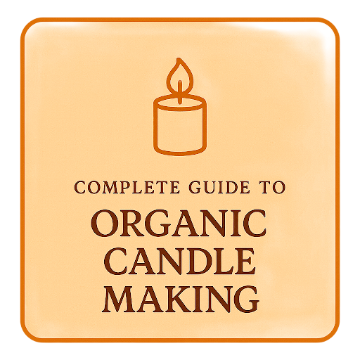

Complete Guide to Organic Candle Making¶

Welcome to your comprehensive resource for safe, organic candle making! Whether you're crafting your first candle or building a candle-making business, this guide provides everything you need to create beautiful, high-quality candles using natural materials.

🕯️ Why Organic Candle Making?¶
Organic and natural candles offer numerous benefits:
- Cleaner Burning: Natural waxes produce less soot and toxins
- Sustainable: Eco-friendly materials with renewable sources
- Healthier: No harmful chemicals or synthetic additives
- Better Scent Throw: Natural materials hold and release fragrances beautifully
- Market Demand: Growing consumer preference for natural products
🚀 Quick Start Guide¶
New to candle making? Start here:
- Safety First - Essential safety protocols
- Basic Tools - What you need to get started
- Your First Candle - Step-by-step tutorial
- Understanding Wax - Choose the right wax
Ready to expand your skills:
- Container Candles - Master the basics
- Pillar Candles - Free-standing candles
- Scent Blending - Create custom fragrances
- Quality Control - Professional standards
Building a candle business:
- Business Getting Started - Foundation setup
- Product Development - Create your line
- Pricing Strategy - Price for profit
- Scaling Production - Grow efficiently
🌿 Natural Wax Types We Cover¶
-
:material-leaf: Soy Wax
Clean-burning, excellent scent throw, beginner-friendly
-
:material-bee: Beeswax
Natural air purifier, longest burn time, premium quality
-
:material-palm-tree: Coconut Wax
Luxury option, excellent cold and hot throw
-
:material-flask: Blended Wax
Combine benefits, custom performance characteristics
🔧 Troubleshooting¶
Quick links to diagnose and improve candle performance:
🛡️ Safety Always First¶
Safety Priority
Candle making involves hot wax, open flames, and potentially hazardous materials. Always prioritize safety:
- Maintain proper ventilation
- Use appropriate temperature controls
- Have fire safety equipment ready
- Follow all safety protocols
**[Read Complete Safety Guide →](getting-started/safety.md)**
📎 Additional Resources¶
- Glossary
- Measurements & Conversions
- Supplier Directory
- Safety Data Sheets
- Troubleshooting Quick Reference
📚 What You'll Learn¶
Foundation Knowledge¶
- Materials Science: Understanding different waxes, wicks, and additives
- Safety Protocols: Comprehensive safety procedures for home and commercial production
- Equipment Mastery: From basic tools to professional equipment
- Quality Standards: Testing methods and quality control procedures
Practical Skills¶
- Step-by-Step Tutorials: Detailed instructions for every candle type
- Troubleshooting: Solutions to common problems and issues
- Advanced Techniques: Professional methods for unique candles
- Finishing & Packaging: Professional presentation and storage
Business Development¶
- Market Research: Understanding your target customers
- Product Line Development: Creating cohesive candle collections
- Cost Analysis: Pricing for profitability
- Marketing Strategies: Building your brand and customer base
- Legal Considerations: Insurance, regulations, and compliance
🎯 Success Stories¶
Professional Results
This guide has helped countless makers transition from hobby to business, with techniques used by professional candle makers and successful small businesses.
🔥 Ready to Start?¶
Choose your path:
-
:fontawesome-solid-graduation-cap: Learn the Basics
Start with fundamentals and safety
-
:fontawesome-solid-tools: Jump to Tutorials
Ready to make your first candle
-
:fontawesome-solid-chart-line: Business Guide
Turn your passion into profit
-
:fontawesome-solid-search: Troubleshoot Issues
Solve problems and improve quality
This guide emphasizes organic and natural candle making methods, prioritizing safety, quality, and sustainable practices. All tutorials and business advice are based on proven methods used by successful candle makers and industry professionals.